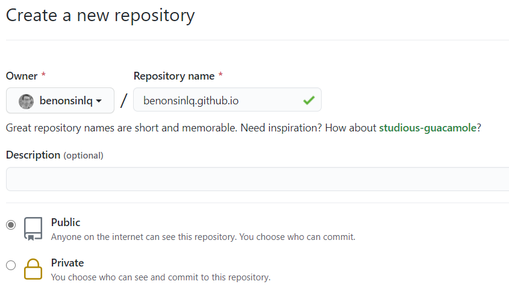
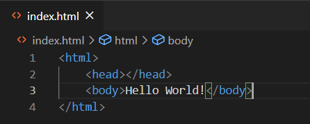
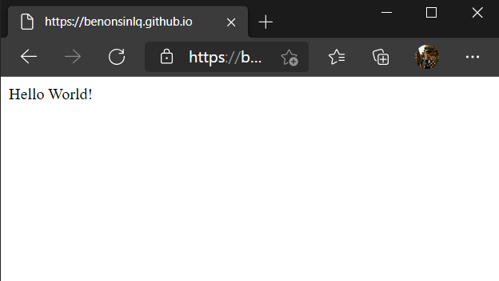

Tạo web tĩnh miễn phí với Github Pages
Đối với anh em lập trình, việc có nhiều side project trên Github là điều thường thấy. Trước đây, việc tạo ra một trang web để chia sẻ đối với anh em là điều không dễ. Một là mất phí cho hosting, hai là free hosting thì có nhiều quảng cáo. Nay với việc Github cho ra tiện ích Github Pages, coi như anh em có 1 free host không quảng cáo, deploy cực kỳ dễ dàng. Vậy setup 1 Github Page như thế nào, mời anh em xem phần bên dưới.
Bước 0: Đăng nhập vào Github, nếu không có thì tạo tài khoản Github
Bước 1: Tạo một Repository với tên là “username.github.io”, với username là username tài khoản Github của anh em. Chú ý là phải tạo Public Repository. Nếu anh em tạo Private Repository thì không set up Github Pages được đâu nhé.

Bước 2: Anh em clone Repository về máy
Bước 3: Anh em tạo 1 file là index.html với nội dung là Hello World, thực ra thì nội dung gì cũng được. Trang này sẽ là trang chủ của anh em.

Bước 4: Commit và push lên Github
Bước 5: Mở trình duyệt và đi tới trang https://username.github.io và xem kết quả.

Bước 6: Mua domain và gắn vào Github page, anh em sẽ có 1 static site. Phần này anh em đọc bài sau nhé.
Tới đây anh em tha hồ code kiết. Với trang này, anh em có thể tha hồ vọc front-end và chia sẻ với mọi người. Có thể là blog, portfolio, hay online CV cũng ổn.
Chúc anh em thành công vào có nhiều nội dung hay để chia sẻ với cộng đồng.